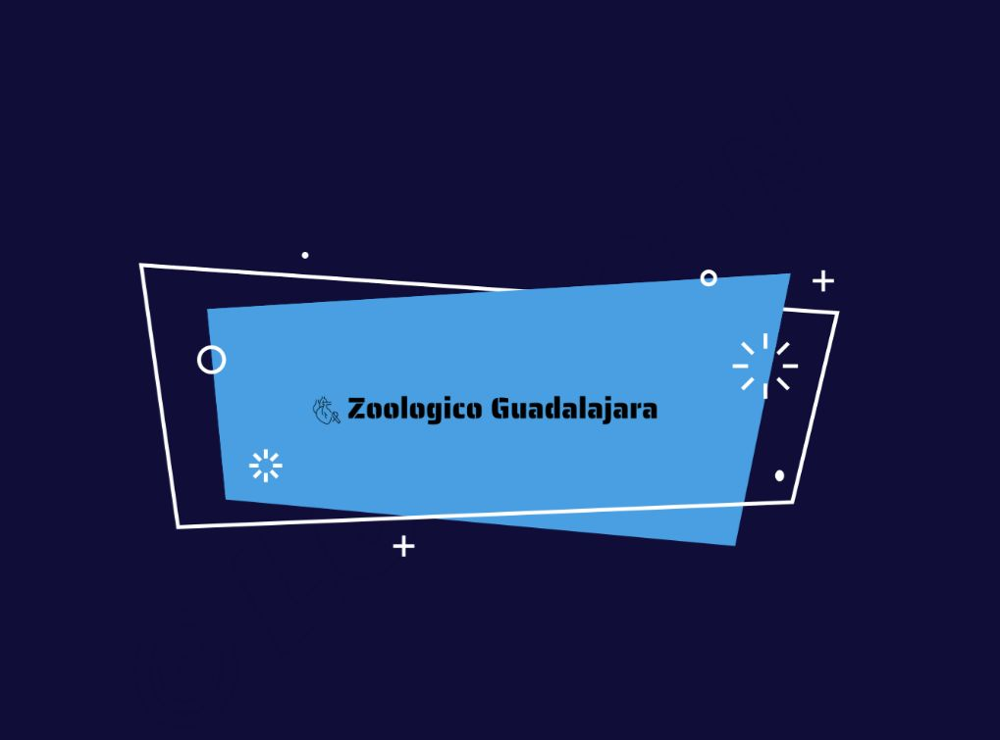

Introducir el concepto de conservación y el rol de los zoológicos.
Presentación del propósito del proyecto y de la importancia de cuidar el medio ambiente.
Investigación previa sobre algunas especies que se verán en el zoológico.
Etapa 1: Visita al Zoológico
Experiencia práctica de aprendizaje, observación y respeto por la naturaleza.
Visita guiada al zoológico,
enfocándose en la observación del comportamiento animal, la interacción entre especies, sus hábitats y los esfuerzos de conservación.
Etapa 2: Reflexión y Consolidación (Después de la visita)
Procesamiento de la información, desarrollo de la comprensión, la empatía y el aprendizaje autodirigido
Creación de presentaciones, informes, dibujos o cualquier otra forma creativa para compartir lo aprendido.
Reflexión sobre la importancia de la conservación y la responsabilidad individual.
Etapa 3: Aplicación y Extensión (Post-visita)
Aplicación de los conocimientos adquiridos y prolongación del interés por la naturaleza y la conservación.
Proyectos de investigación individuales o grupales sobre un tema específico relacionado con el zoológico o la conservación.
Creación de material divulgativo (carteles, folletos, etc.) sobre la importancia de cuidar la flora y fauna.